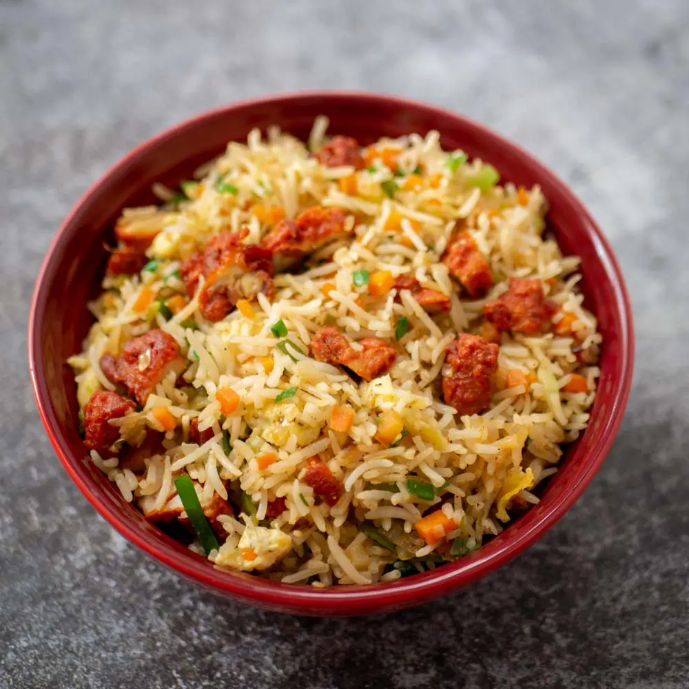

Chicken Fried Rice

Description
I made this Chicken Gravy for today’s lunch, modified the recipe a bit, and it came out so good that I couldn’t wait to share it. Everyone at home is dozing off, bored of watching TV, so I thought, why not share this delicious recipe. The gravy turned out rich, flavorful, and perfect, making it a great combo for fried rice. So here it is hot from my kitchen!
Now lets get on to how to make this Easy Fried Rice. This one’s for all the readers who wanted more fried rice recipes from me. You can make this quickly in a pan, but using a wok on high flame gives it that perfect restaurant-style flavor. It’s aromatic, flavorful, and a perfect match for any gravy
Ingredients
- Basmati Rice - 2 cups (or any long grain rice)
- Water - 4 cups
- Salt - 2 tsp
- Oil - 2 tsp
- Boneless Chicken - 200 g (cut into small pieces)
- Soy Souce - 2 tsp
- Pepper Powder - ½ tsp
- Ginger Garlic Paste - 1 tsp
Steps
- Rinse and cook the rice with water and salt, then spread it to cool.
- Mix chicken with soy sauce, pepper, salt, ginger-garlic paste, and cornflour.
- Stir-fry the marinated chicken in oil until fully cooked and slightly crispy.
- Scramble an egg with salt and pepper in the same pan and set it aside.
- Heat oil, add chopped garlic and ginger, and stir-fry until fragrant.
- Toss in chopped carrots, capsicum, and cabbage, stir-frying on high heat.
- Add soy sauce, vinegar, chili sauce, pepper, and salt, then mix well.
- Add the cooked chicken and scrambled egg, tossing to blend flavors.
- Add cooled rice and mix on high flame for 2-3 minutes.
- Sprinkle spring onions and butter, then serve hot.